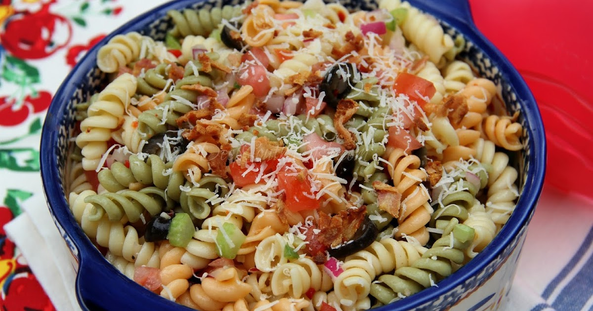

Garden Rotini Spaghetti

A delicious and healthy vegetarian pasta dish packed with fresh vegetables and a flavorful tomato sauce.
Ingredients:
- 8 oz rotini pasta
- 2 tbsp olive oil
- 1 onion, diced
- 3 cloves garlic, minced
- 1 bell pepper, diced
- 1 zucchini, diced
- 1 cup cherry tomatoes, halved
- 1 can (14 oz) crushed tomatoes
- 1 tsp dried oregano
- Salt and pepper to taste
- Fresh basil for garnish (optional)
Instructions:
- Cook the rotini pasta according to package instructions until al dente. Drain and set aside.
- In a large skillet, heat the olive oil over medium heat. Add the diced onion and minced garlic, and sauté until the onion is translucent.
- Add the diced bell pepper and zucchini to the skillet. Cook for about 5 minutes until the vegetables are tender.
- Add the halved cherry tomatoes and cook for another 2 minutes until they start to soften.
- Pour in the crushed tomatoes and add the dried oregano. Stir well to combine. Simmer for 10-15 minutes, allowing the flavors to meld together. Season with salt and pepper to taste.
- Toss the cooked rotini pasta with the tomato sauce until well coated.
- Serve hot, garnished with fresh basil if desired.
Home